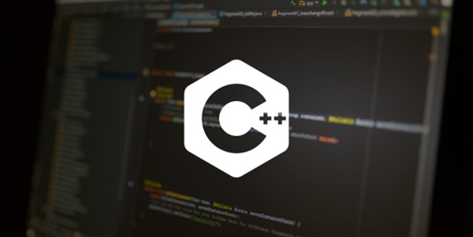
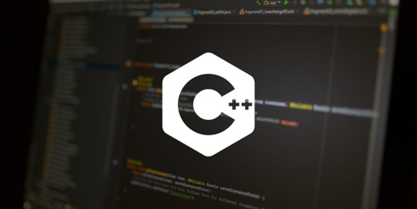
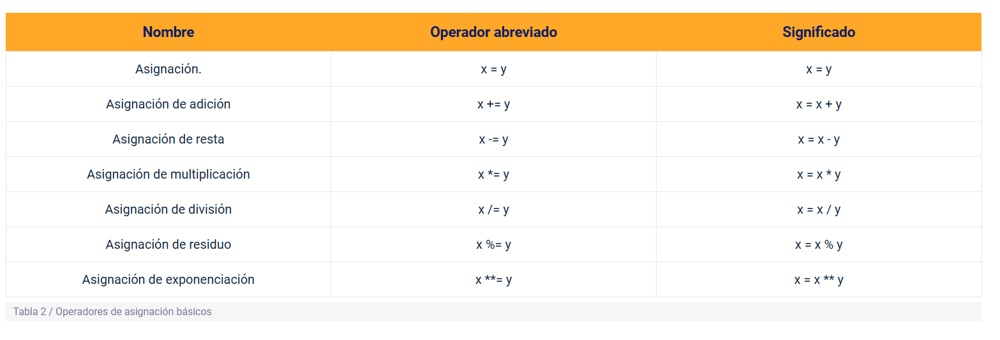

Esta evidencia se centra en consolidar los conceptos básicos relacionados con los lenguajes de programación, entornos de codificación e instalación y la sintaxis del lenguaje de JavaScript.
1. Principales diferencias entre los lenguajes compilados e interpretados.
Los lenguajes compilados son convertidos directamente a código máquina que el procesador puede ejecutar. Como resultado, suelen ser más rápidos y más eficientes al ejecutarse en comparación con los lenguajes interpretados. También le dan al desarrollador más control sobre aspectos del hardware, como la gestión de memoria y el uso del CPU.
Estos lenguajes necesitan un paso de compilación (build) - primero necesitan compilarse manualmente. Necesitas "recompilar" el programa cada vez que necesites hacer un cambio. En nuestro ejemplo del hummus, la traducción completa está escrita antes de que la tengas.
Los lenguajes compilados necesitan un paso previo de compilación, que toma el código fuente y lo convierte en un archivo ejecutable (generalmente binario). Este archivo se puede ejecutar directamente en la máquina. una ventaja clave de ello es que Una vez compilado, el programa se ejecuta rápidamente. generalmente son más rápidos en tiempo de ejecución porque el código ya ha sido traducido a lenguaje máquina y se ejecuta directamente.
El código compilado es generalmente específico para una arquitectura o sistema operativo (ej. Windows, Linux), lo que significa que un programa compilado en una plataforma puede no funcionar en otra sin modificaciones. Estos lenguajes detectan errores durante la fase de compilación. Si hay un error, el código no se compila y no se puede ejecutar.
En el ciclo de desarrollo puede ser más lento debido a que después de cada cambio en el código, se requiere recompilar el programa para probarlo, y generalmente El programa se distribuye como un binario o ejecutable, lo que protege el código fuente y permite una distribución más eficiente para los usuarios finales.
Algunos ejemplos de lenguajes compilados puros son C, C++, Erlang, Haskell, Rust y Go.
 

Estos lenguajes ejecutan línea por línea o bloque por bloque por un programa llamado intérprete, sin necesidad de generar un archivo ejecutable completo previamente.
A diferencia de los lenguajes compilados, en los lenguajes interpretados No hay necesidad de compilar el código fuente previamente. El intérprete lee y ejecuta el código directamente, lo que facilita las pruebas rápidas y el desarrollo ágil.
Una desventaja de los lenguajes interpretados es que son más lentos en tiempo de ejecución, ya que el intérprete tiene que traducir el código a medida que se ejecuta, por otra parte, los lenguajes interpretados Son más portables, ya que el intérprete es el que se encarga de ejecutar el código. Mientras el intérprete esté disponible en la plataforma, el código fuente puede ejecutarse sin cambios.
Los errores de los lenguajes interpretados se detectan en tiempo de ejecución, es decir, el intérprete encuentra errores a medida que ejecuta el código, lo que puede llevar a que los errores solo aparezcan durante la ejecución del programa, y El ciclo de desarrollo es generalmente más rápido que el de los lenguajes compilados, porque no necesitas compilar el código; simplemente haces cambios y ejecutas el programa.
El ciclo de desarrollo de los lenguajes interpretados es generalmente más rápido porque no se necesita compilar el código; simplemente haces cambios y ejecutas el programa. Y para la distribución de un programa, normalmente se requiere distribuir el código fuente, que luego es ejecutado por el intérprete.
Los lenguajes interpretados alguna vez fueron significativamente más lentos que los lenguajes compilados. Pero, con el desarrollo de la compilación justo a tiempo, esa diferencia se está reduciendo.
Ejemplos comunes de lenguajes interpretados son PHP, Ruby, Python y JavaScript.
2. Características principales de JavaScript.
A continuación las principales características de Javascript las cuales definen de forma general, este lenguaje :
3. Tipos de datos primitivos y uso en JavaScript.

JavaScript tiene los siguientes tipos de operadores (se describirán los principales para aprender a programar). Según sea el tipo que las variables o constantes almacenan, se pueden clasificar en seis (6) tipos de datos primitivos la referencia del lenguaje dice que son:
Otros tipos de datos más complejos o abstractos de datos:
Cuando se declaran variables se debe considerar los siguientes tipos, ya se han usado dos (2) de ellas:
Uso de los tipos de datos primitivos en JavaScript:
Los tipos primitivos se utilizan para almacenar valores simples que no requieren estructuras complejas. A diferencia de los objetos, los primitivos son inmutables, lo que significa que su valor no puede cambiar una vez que se han creado (aunque la variable que los contiene sí puede cambiar de valor).
3. Operadores en JavaScript.
Se considera una expresión, aunque de un tipo distinto, el asignar un valor a una variable. Para todas estas operaciones se emplean los denominados ‘operadores‘. Se listan a continuación algunos de los operadores que se utilizan con mucha frecuencia.
Operadores de asignación.
Un operador de asignación asigna un valor a la variable a la izquierda basándose en el valor de su operando derecho. El operador de asignación más simple es igual (=), que asigna el valor de su operando derecho a su operando izquierdo. Es decir, x = y asigna el valor de y a x. A continuación, se presenta una lista de operadores más usados.
También hay operadores de asignación compuestos que son una abreviatura de las operaciones enumeradas en la siguiente tabla:
Operadores de comparación.
Son operadores cuya función es comparar dos expresiones y como resultado de la comparación devuelven un valor falso o verdadero (booleano), que representa la relación de sus valores comparados. Existen operadores para comparar valores numéricos, pero también operadores para comparar cadenas y operadores para comparar otros tipos de datos (tabla 3).

Operadores de aritméticos.
Los operadores aritméticos toman valores numéricos (ya sean literales o variables) como sus operandos y devuelve un solo valor numérico. Los operadores aritméticos básicos son suma (+), resta (-), multiplicación (*) y división (/). Estos operadores funcionan como en la mayoría de los otros lenguajes de programación cuando se usan con números de punto flotante, teniendo en cuenta que la división por cero produce un error (tabla 4).

Operadores lógicos.
Con los operadores lógicos, se pueden crear condiciones compuestas, por ejemplo, cuando se deben cumplir dos o más condiciones para elegir las operaciones ejecutar; además, se pueden describir estas combinaciones de condiciones (tabla 5 y figura 5).

Se han presentado los operadores más comunes, aunque existen otros tipos de operadores que tal vez no son los más empleados y una referencia completa la puede obtener desde el recurso web denominado Expresiones y operadores (MDN, 2021a).